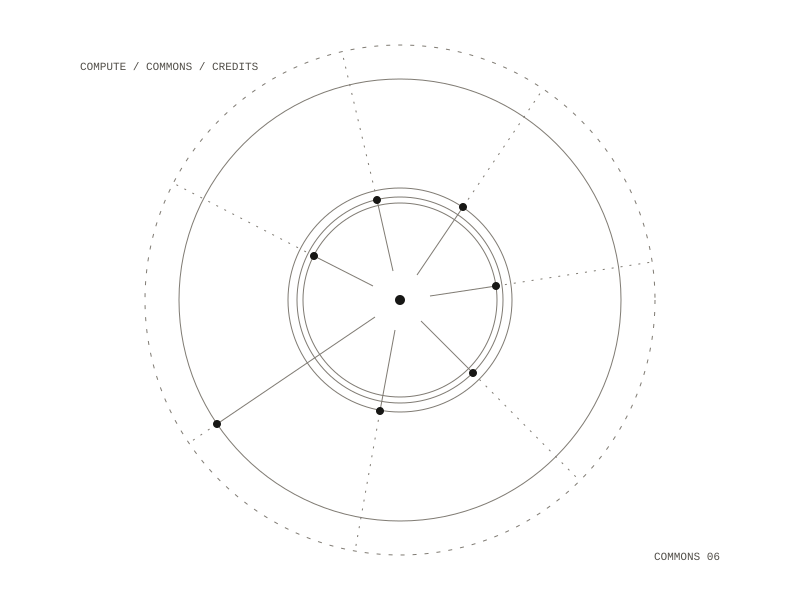

Compute Club
A cooperative interface for using models on shared compute. Members run agents, build apps, and contribute apps, archive material and reviewed knowledge back to a commons, earning credits they spend on compute. The frontend is real and all data is mocked behind a swappable API layer, shaped so a backend can drop in without touching the components.

The four screens
- Dashboard: budgets shown as what remains, a live panel of running agents with pause, kill and cost, usage charts, storage, projects, contributions and credits.
- Commons: a searchable registry of apps, archive material and generated knowledge, each with its provenance; knowledge carries a confidence signal and a review gate, alongside governance proposals.
- Workspace: one build environment with panes for chat, a harness runner, an editor, a terminal and logs.
- Account: SSH keys, a secrets vault, profile, credits and billing, privacy defaults.
One shared state
Launching an agent in the Workspace makes it appear live on the Dashboard, where pausing or killing it updates in real time; credits move when you launch runs or deploy apps. Generated knowledge is never presented as fact: every entry carries provenance, a confidence signal and a review status, and unreviewed entries are labelled. The commons is a searchable registry instead of a feed, and credits and governance give the cooperative its reciprocity.
Running it
Everything runs in Docker through named recipes. Containers run as a non-root user with all capabilities dropped, the production image has a read-only root, and ports bind to the local machine only.
Dashboard, Commons, Workspace, Account
mocked, behind one swappable API module